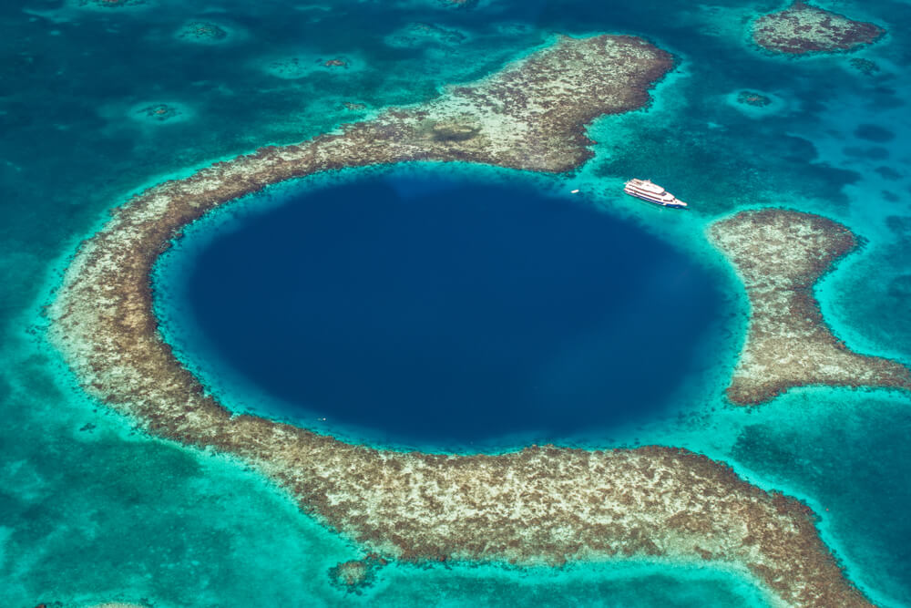
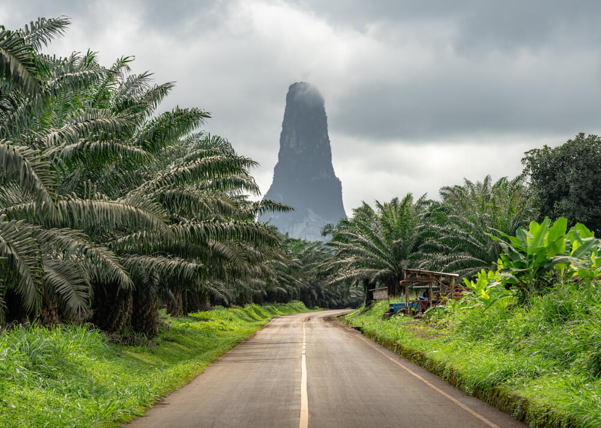
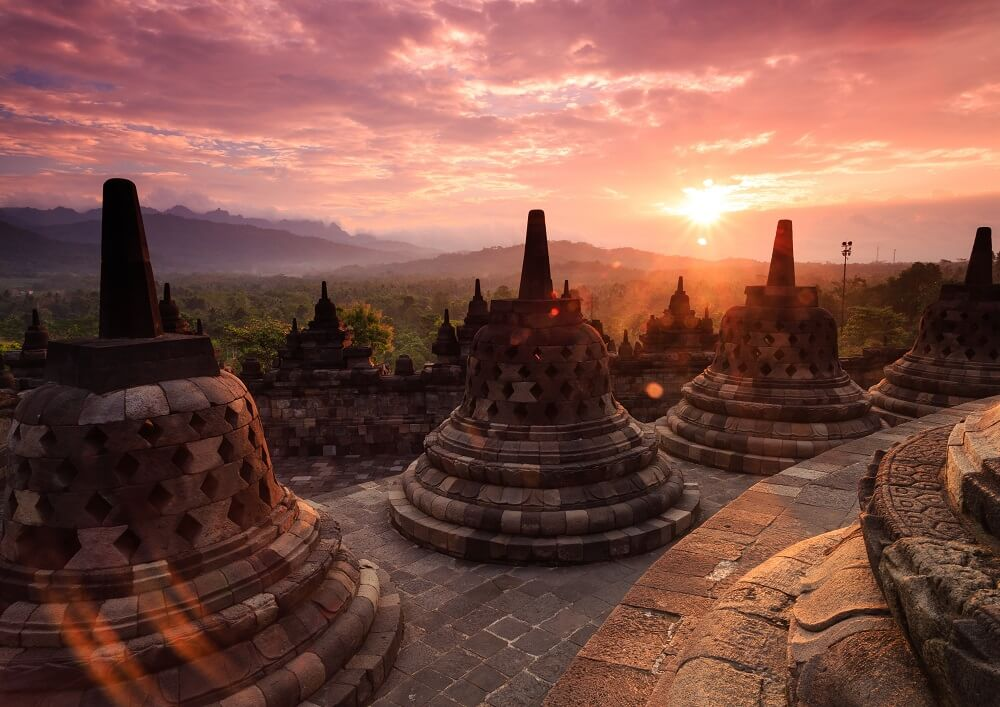
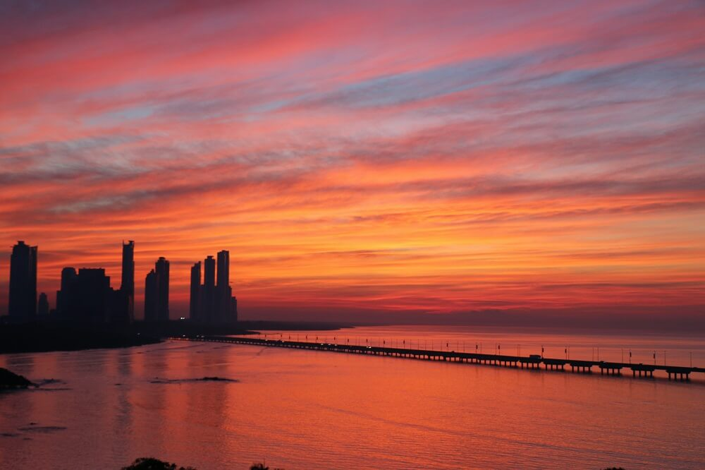

Незабываемый отдых
Великие путешественники 21 века
Великие путешественники 21 века

Самые интересные страны мира для путешествий

10. БЕЛИЗ
Без карты вот так сразу и не разберёшься, где спряталось это государство. А оно в Центральной Америке делит границы с Гватемалой и Мексикой. 30% жителей страны — потомки английских пиратов и африканских рабов, есть даже настоящие индейцы майя.
Сюда едут за природой, ведь большая часть страны — леса, реки и озёра. И именно недалеко от Белиза Большая Голубая дыра — загадочная воронка прямо в океане. Для посещения нужна виза, но, если цель поездки туризм не более 30 дней, визу оформляют на границе. Но не отправляйтесь туда в феврале-марте — это сезон лютых дождей.

9. САН-ТОМЕ И ПРИНСИПИ
Тоже сходу и не скажешь где это. Остров находится в Гвинейском заливе близ африканского Габона. Бесконечно зелёное местечко, здесь понравится любителям необычного и экзотического отдыха. Сюда тянет огромный национальный парк Обо, Голубая лагуна и гора Пико Кэо Грандэ. Но для посещения острова надо сделать несколько прививок.
 8. БЕЛАРУСЬ
8. БЕЛАРУСЬ
Вот это да! Смягчение визового режима привлекло туристов со всего света. У отдыха в этой стране два направления: городское и оздоровительное. Минск сильно преобразился за последние годы. стал чище, дружелюбнее и веселее. А про белорусские оздоровительные санатории ходят легенды во всей Европе.

7. ИНДОНЕЗИЯ
Помним, что Индонезия — это не только Бали. Это и Джакарта, Баликпапан, Макассар, Западная новая Гвинея и ещё множество городов и островов. Не ограничивайтесь чем-то одним, Индонезию исследовать и исследовать!
 6. ИОРДАНИЯ
6. ИОРДАНИЯ
Всё больше туристов едет в Амман познакомиться с иорданской культурой. Именно в этой стране и находится кусочек Марса — красная пустыня Вади Рам, где снимался не один космический фильм. Но смотреть — одно, побывать там — совсем другое. Зато смело можно говорить друзьям, что вы были на Марсе!
 5. КЫРГЫЗСТАН
5. КЫРГЫЗСТАН
Чего-чего, а гор здесь хоть отбавляй. Поэтому скучно не будет — природа потрясающая. Начинайте знакомство с Бишкека, затем езжайте вглубь к озеру Иссык-Куль, Караколу, а оттуда двигайтесь в сторону одноимённого ущелья. Красота невероятная и определённо стоит вашего отпуска.

4. ПАНАМА
Ещё одна страна, переходящая из Центральной Америки в Южную. С одной стороны Коста-Рика, с другой Колумбия. Многих привлекает то, что в один день вы купаетесь в Карибском море, а на другой уже плещетесь в Тихом океане. Если пляжный отдых не для вас, записывайтесь на пешие экскурсии, ведь посмотреть есть на что! На территории есть небольшие горы, различные вулканические остатки, исторические развалины, где раньше прятались пираты.
 3. ЗИМБАБВЕ
3. ЗИМБАБВЕ
Ещё один африканский уголок. Хоть здесь и нет моря, зато сколько видов животных! Чтобы на всех посмотреть, отправляйтесь в заповедники на сафари. Здесь же стометровый водопад Виктория. Всё как в мультике про короля льва. И не беспокойтесь о здоровье. Для посещения страны не обязательно делать прививки, достаточно пить таблетки от малярии и носить вещи с длинным рукавом.
 2. ГЕРМАНИЯ
2. ГЕРМАНИЯ
Без Европы никак нельзя, да и почему нет? В разносторонней Германии есть всё: горы, выход к двум морям, строгая архитектурная и развязная весёлая культура, даже есть свой фестиваль воздушных шаров и Чёрный лес из сказок про Красную шапочку.
 1. ШРИ-ЛАНКА
1. ШРИ-ЛАНКА
А вот и безоговорочный фаворит списка! Сёрфинг, закаты, чай, свежайшие фрукты, йога, океан и ещё раз сёрфинг. Отказаться от такого отдыха сложно, да и не нужно совсем. Просто берите билеты :)
Ничего не забудь!
❏ заграничный паспорт;
❏ российский паспорт (при поездках по РФ);
❏ международный медицинский страховой полис;
❏ медицинский полис РФ;
❏ маршрутные квитанции или билеты на самолёт/паром (при наличии);
❏ ваучер на трансфер (при наличии);
❏ ваучер на заселение в отель или подтверждение бронирования;
❏ водительские права международного образца;
❏ копии всех документов.
❏ банковские карты Visa или MasterCard (банк предупреждён);
❏ наличные в USD или EURO;
❏ наличные в RUB для трат на территории РФ;
❏ потайная сумка для денег.
❏ жаропонижающие: Парацетамол, Нурофен, ТераФлю и др.;
❏ обезболивающее: Ибупрофен, Но-Шпа, Валидол и др.;
❏ от аллергии: Супрастин, Кларитин, Зиртек и др.;
❏ от боли в горле: Гексорал, доктор Мом, Имудон и др.;
❏ от кашля: Гербион, АЦЦ, Бромгексин и др.;
❏ против диареи и отравления: Энтеросгель, Смекта, Хилак Форте, и др.;
❏ от ожогов: Пантенол, Левомеколь и др.;
❏ антисептик: Мирамистин и др.;
❏ от укачивания: Драмина, Авиа-Море и др.;
❏ лекарства при хронических заболеваниях при необходимости;
❏ дезинфицирующие средства: зелёнка, перекись и др.;
❏ гигиенические принадлежности: бинты, ватные палочки и диски, пластырь.
❏ фотоаппарат;
❏ мобильный телефон;
❏ наушники;
❏ USB флешка (с фильмами);
❏ сетевой переходник;
❏ зарядное устройство/аккумулятор/батарейки.
❏ зубная паста и щётка;
❏ шампунь;
❏ мыло/гель для душа;
❏ бритва;
❏ влажные и бумажные салфетки;
❏ крем для тела и лица;
❏ солнцезащитный крем;
❏ дезодорант;
❏ зеркало;
❏ пилка, ножнички;
❏ декоративная косметика;
❏ прокладки, тампоны.
❏ футболки (минимум две штуки);
❏ шорты/ юбка;
❏ лёгкое платье;
❏ брюки/джинсы;
❏ тёплый свитер или накидка, ветровка (на случай плохой погоды);
❏ носки;
❏ купальник/ плавки;
❏ нижнее белье;
❏ головной убор;
❏ сандалии или пляжные шлепки;
❏ туфли «на выход», желательно на низком каблуке;
❏ кроссовки (для экскурсий, походов в горы и т. д.);
❏ солнцезащитные очки.
❏ свидетельство о рождении (для детей до 14 лет);
❏ сменный комплект одежды в дорогу;
❏ подгузники;
❏ детское питание;
❏ любимая игрушка;
❏ игры/мультики на планшете.
❏ набор одноразовой посуды;
❏ фумигатор;
❏ фонарик;
❏ мини-кипятильник